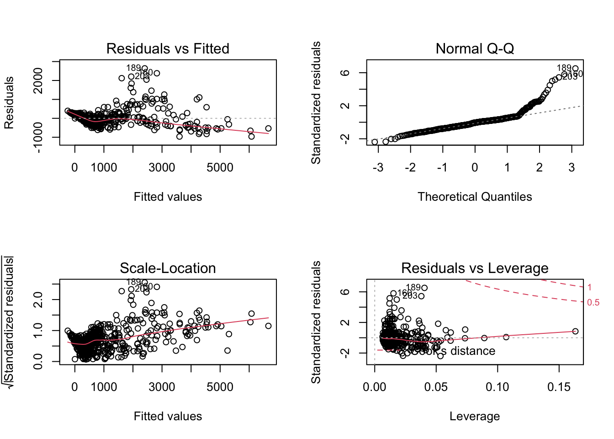
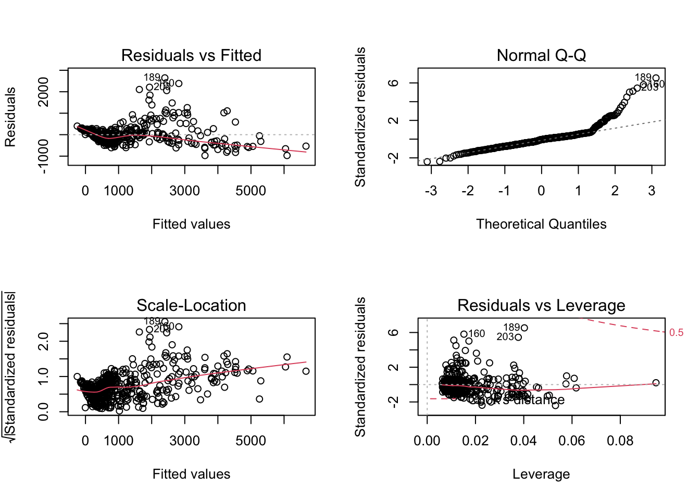
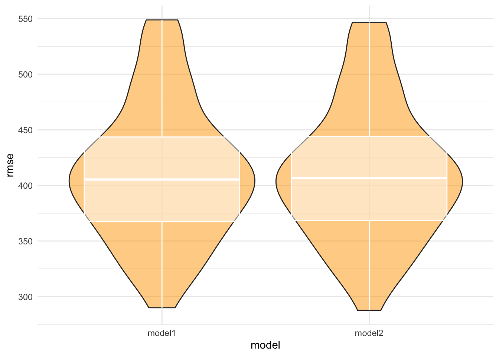

Regression Model
Here is the regression analysis of shooting incidence.
library(tidyverse)
library(rvest)
library(knitr)
library(plotly)
library(modelr)
theme_set(theme_minimal() + theme(legend.position = "bottom"))
options(
ggplot2.continuous.colour = "viridis",
ggplot2.continuous.fill = "viridis"
)
scale_colour_discrete = scale_colour_viridis_d
scale_fill_discrete = scale_fill_viridis_d
#Load the dataset NYPD shooting incident
shooting =
read_csv("./data/NYPD_Shooting.csv") %>%
janitor::clean_names()
#check null
shooting %>%
summarise_all(~ sum(is.na(.)))## # A tibble: 1 x 19
## incident_key occur_date occur_time boro precinct jurisdiction_code
## <int> <int> <int> <int> <int> <int>
## 1 0 0 0 0 0 2
## # ... with 13 more variables: location_desc <int>,
## # statistical_murder_flag <int>, perp_age_group <int>, perp_sex <int>,
## # perp_race <int>, vic_age_group <int>, vic_sex <int>, vic_race <int>,
## # x_coord_cd <int>, y_coord_cd <int>, latitude <int>, longitude <int>,
## # lon_lat <int>#For col boro
shooting = shooting %>%
mutate(boro = as.factor(boro)) %>%
mutate(location_desc = replace_na(location_desc, "NONE")) %>%
mutate(location_desc = as.factor(location_desc)) %>%
mutate(location_desc = fct_relevel(location_desc, c("NONE", "MULTI DWELL - PUBLIC HOUS", "MULTI DWELL - APT BUILD", "PVT HOUSE", "GROCERY/BODEGA", "BAR/NIGHT CLUB", "HOSPITAL", "COMMERCIAL BLDG", "DEPT STORE", "GAS STATION", "HOTEL/MOTEL", "SMALL MERCHANT", "RESTAURANT/DINER", "CLOTHING BOUTIQUE", "FACTORY/WAREHOUSE", "SOCIAL CLUB/POLICY LOCATI"))) %>%
mutate(location_desc = recode(location_desc,
"NONE" = "none",
"MULTI DWELL - PUBLIC HOUS" = "public_house",
"MULTI DWELL - APT BUILD" = "apt_building",
"PVT HOUSE" = "pirvate_house",
"GROCERY/BODEGA" = "grocery_bodega",
"BAR/NIGHT CLUB" = "bar_club",
"HOSPITAL" = "hospital",
"COMMERCIAL BLDG" = "commercial",
"DEPT STORE" = "dept_store",
"GAS_STATION" = "gas_station",
"HOTEL/MOTEL" = "hotel",
"SMALL MERCHANT" = "merchant",
"RESTAURANT/DINER" = "restaurant",
"CLOTHING BOUTIQUE" = "clothing",
"FACTORY/WAREHOUSE" = "factory",
"SOCIAL CLUB/POLICY LOCATI" = "club"
)) %>%
separate(occur_date, into = c("month", "day", "year")) %>%
mutate(month = as.numeric(month)) %>%
arrange(year, month) %>%
# mutate(month = month.name[month]) %>%
mutate(year = as.character(year)) %>%
mutate(boro = tolower(boro)) %>%
mutate(boro = if_else(boro == "staten island", "staten_island", boro)) %>%
rename(borough = boro) %>%
mutate(date = str_c(month, day, year, sep = "/")) %>%
select(incident_key, date, everything())
#Next, clean the COVID-19 case count data
#Importing COVID-19 case count data
covid_counts = read.csv("./data/COVID19_data.csv", sep = ";") %>% as_tibble()
##The clean dataset contains only day-by-day COVID-19 case count for each borough and the total case count in NYC of a particular day.
clean_covid = covid_counts %>%
janitor::clean_names() %>%
rename(date = date_of_interest) %>%
select(date, contains("case_count")) %>%
select(-contains(c("probable_case_count", "case_count_7day_avg", "all_case_count_7day_avg"))) %>%
separate(date, into = c("month", "day", "year")) %>%
mutate_all(as.character) %>%
mutate_if(is.character, gsub, pattern = ",", replacement = "") %>%
mutate_if(is.character, as.numeric) %>%
pivot_longer(
cols = bx_case_count:si_case_count,
names_to = "borough",
values_to = "borough_case_count"
) %>%
mutate(borough = gsub("_case_count", "", borough)) %>%
mutate(borough = recode(borough, "bx" = "bronx","bk" = "brooklyn","mn" = "manhattan","si" = "staten_island","qn" = "queens")) %>%
relocate(case_count, .after = borough_case_count) %>%
rename(total_case_count = case_count) %>%
mutate(date = str_c(month, day, year, sep = "/")) %>%
select(date, everything())Merge the COVID-19 data set with shooting
Note: The date of shooting and COVID datasets only overlap on February-December 2020, so we do the analysis base on the overlap.
shooting_mini =
shooting %>%
filter(year == "2020") %>%
select(c("date", "incident_key", "borough"))
shooting_covid =
merge(x = shooting_mini, y = clean_covid, by = c("date", "borough")) %>%
relocate("date", "month", "day", "year", everything()) %>%
group_by(date) %>%
add_count(borough, name = "borough_n_victim") %>% # victim number equals to the count of incident_key (includind duplicate)
distinct() %>%
add_count(borough, name = "borough_n_shooting") %>% # shooting number equals to the count of distinct incident_key
select(-incident_key) %>%
distinct() %>%
add_count(date, wt = borough_n_victim, name = "total_n_victim") %>%
add_count(date, wt = borough_n_shooting, name = "total_n_shooting") %>%
mutate(
borough = recode(borough,
"bronx" = "Bronx",
"brooklyn" = "Brooklyn",
"manhattan" = "Manhattan",
"queens" = "Queens",
"staten_island" = "Staten Island")
)Regression Analysis
The goal of this section was to find whether there is any relationship between the number of COVID-19 case with the number of shooting case within different borough. We combined our data resources and examine the following candidate predictors for the outcome of COVID-19 case rate: the number of shooting case, the number of shooting case and Covid cases in different borough.
Model selection
Fit a linear regression model for total shooting case with total COVID case as predictor.
original_lm = lm(total_case_count ~ total_n_shooting + borough + borough_case_count + borough_n_shooting + borough_n_victim, data = shooting_covid)
broom::tidy(original_lm) %>%
knitr::kable()| term | estimate | std.error | statistic | p.value |
|---|---|---|---|---|
| (Intercept) | 338.54947 | 53.8712414 | 6.284419 | 0.0000000 |
| total_n_shooting | -22.84892 | 6.6417297 | -3.440206 | 0.0006272 |
| boroughBrooklyn | -485.55153 | 49.9741152 | -9.716061 | 0.0000000 |
| boroughManhattan | 184.94922 | 55.4239069 | 3.336994 | 0.0009064 |
| boroughQueens | -358.40454 | 54.9730146 | -6.519645 | 0.0000000 |
| boroughStaten Island | 480.09819 | 85.4432598 | 5.618912 | 0.0000000 |
| borough_case_count | 3.86830 | 0.0659028 | 58.697050 | 0.0000000 |
| borough_n_shooting | 65.30967 | 29.8450194 | 2.188294 | 0.0290848 |
| borough_n_victim | -19.26937 | 17.0724084 | -1.128685 | 0.2595424 |
set.seed(100)
par(mfrow = c(2,2))
plot(original_lm) According to the plot, the residuals is not equally distributed around the 0 horizontal line. The residual does not follow the normal distribution. From the Q-Q plot, the upper end of the Q-Q plot to deviate from the straight line and the lower and follows a straight line then the curve has a longer till to its right and it is right-skewed. There are few influential points outside the Cook’s distance from the residual vs leverage plot.
Use Stepwise regression to find the reduced model
step_lm = step(original_lm ,direction = "backward")FALSE Start: AIC=6491
FALSE total_case_count ~ total_n_shooting + borough + borough_case_count +
FALSE borough_n_shooting + borough_n_victim
FALSE
FALSE Df Sum of Sq RSS AIC
FALSE - borough_n_victim 1 217636 90590906 6490.3
FALSE <none> 90373271 6491.0
FALSE - borough_n_shooting 1 818080 91191350 6493.8
FALSE - total_n_shooting 1 2021870 92395141 6500.9
FALSE - borough 4 39043008 129416279 6676.2
FALSE - borough_case_count 1 588595414 678968685 7573.9
FALSE
FALSE Step: AIC=6490.3
FALSE total_case_count ~ total_n_shooting + borough + borough_case_count +
FALSE borough_n_shooting
FALSE
FALSE Df Sum of Sq RSS AIC
FALSE <none> 90590906 6490.3
FALSE - borough_n_shooting 1 778718 91369625 6492.9
FALSE - total_n_shooting 1 1937594 92528501 6499.7
FALSE - borough 4 38876916 129467822 6674.4
FALSE - borough_case_count 1 589871555 680462461 7573.1broom::tidy(step_lm) %>%
knitr::kable()| term | estimate | std.error | statistic | p.value |
|---|---|---|---|---|
| (Intercept) | 339.348098 | 53.8805130 | 6.298160 | 0.0000000 |
| total_n_shooting | -22.309721 | 6.6262386 | -3.366876 | 0.0008154 |
| boroughBrooklyn | -482.383723 | 49.9081326 | -9.665433 | 0.0000000 |
| boroughManhattan | 184.832789 | 55.4381320 | 3.334037 | 0.0009158 |
| boroughQueens | -360.004827 | 54.9689274 | -6.549242 | 0.0000000 |
| boroughStaten Island | 478.634546 | 85.4554940 | 5.600980 | 0.0000000 |
| borough_case_count | 3.870615 | 0.0658879 | 58.745467 | 0.0000000 |
| borough_n_shooting | 38.446997 | 18.0126077 | 2.134449 | 0.0332642 |
Since the p-value of borough_n_shooting is greater than 0.05, hence it is insignificant.
set.seed(100)
par(mfrow = c(2,2))
plot(step_lm)
According to the plot, there is nmo obvious difference between reduced model and original model. From the Residuals vs Leverage plot, we could observed that the spread of standardized residuals shouldn’t change as a function of leverage: here it appears to decrease, indicating heteroskedasticity. Secondly, points with high leverage may be influential, and there are some point outside the Cook’s distance dotted line, which would have high influence.
shooting_covid %>%
add_residuals(step_lm) %>%
add_predictions(step_lm) %>%
ggplot(aes(x = pred, y = resid)) +
geom_point(alpha = 0.5) +
xlab("Fitted Values") +
ylab("Residuals") +
ggtitle("Residuals Against Fitted Values plot") +
geom_abline(intercept = 0, slope = 0, color = "red")
From the plot, we observed that it have some outliers with residuals greater than 2000. It clustered around the lower single digits of the y = 0 and looks like a nonconstant variance plot.
Model Comparasion
cross validation and the plot for RMSE
cv = crossv_mc(shooting_covid, 100) %>%
mutate(
train = map(train, as_tibble),
test = map(test, as_tibble)
) %>%
mutate(
model1 = map(train, ~lm(total_case_count ~ total_n_shooting + borough + borough_case_count +
borough_n_shooting + borough_n_victim, data = .x)),
model2 = map(train, ~lm(total_case_count ~ total_n_shooting + borough + borough_case_count +
borough_n_shooting, data = .x))) %>%
mutate(
rmse_model1 = map2_dbl(model1, test, ~rmse(model = .x, data = .y)),
rmse_model2 = map2_dbl(model2, test, ~rmse(model = .x, data = .y))
)
cv %>%
select(starts_with("rmse")) %>%
pivot_longer(
everything(),
names_to = "model",
values_to = "rmse",
names_prefix = "rmse_"
) %>%
ggplot(aes(x = model, y = rmse)) + geom_violin(fill = "orange",alpha = 0.5) +
geom_boxplot(alpha = 0.5, color = "white") 
According to the plot, there is no obvious different between RMSE. Model 2 have slightly lower average value of RMSE, hence would be fits better than model 1. The two models are similar since we only drop one parameter for model 2.
Conclusion
Regression Conclusion
Model 2 seems perform a little bit better than the first model.Cross validation shows a little higher rmse for model2 than model1. Total number of shooting, case count in Brooklyn and Queens, are negatively associate with covid-19 cases. Manhattan-borough case count and borough shooting are positively associate with covid1-19 cases.